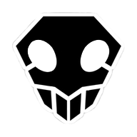

Bienvenido a la Página Fan de Bleach
Ichigo Kurosaki es un estudiante de secundaria ordinario, hasta que su familia es atacada por un Hollow, un espíritu corrupto que busca devorar almas humanas. Es entonces cuando conoce a una Segadora de Almas llamada Rukia Kuchiki, quien resulta herida mientras protege a la familia de Ichigo del atacante. Para salvar a su familia, Ichigo acepta la oferta de Rukia de tomar sus poderes y se convierte en un Segador de Almas como resultado. Sin embargo, dado que Rukia no puede recuperar sus poderes, a Ichigo se le encomienda la abrumadora tarea de cazar a los Hollows que plagan su ciudad. No obstante, no está solo en su lucha, ya que más tarde se le unen sus amigos: los compañeros de clase Orihime Inoue, Yasutora Sado y Uryuu Ishida, quienes cada uno tiene sus propias habilidades únicas. A medida que Ichigo y sus camaradas se acostumbran a sus nuevos deberes y se apoyan mutuamente dentro y fuera del campo de batalla, el joven Segador de Almas pronto aprende que los Hollows no son la única amenaza real para el mundo humano.
